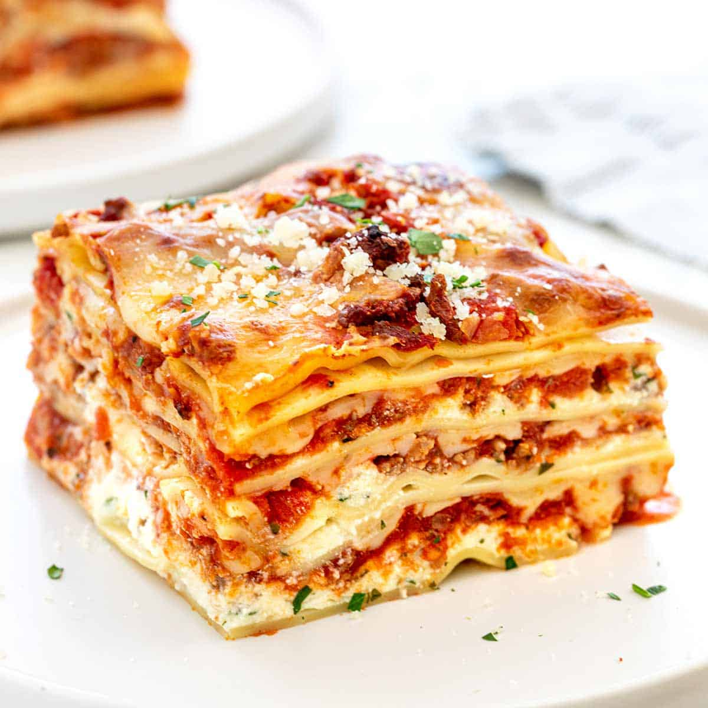

Lasagna Recipe

Description
Lasagna is the ultimate Italian comfort food and it’s the perfect make-ahead meal to enjoy on busy weekdays or even laid back weekends.
Tender pasta noodles are layered with a delicious meat sauce, creamy ricotta, and mozzarella.
Ingredients
- 4 quarts water
- 1 tablespoon kosher salt, for pasta water
- 1 pound lasagna noodles
- 2 large eggs, lightly whisked
- 32 ounces whole milk ricotta cheese
- ½ cup grated parmesan cheese
- 2 tablespoons chopped Italian parsley
- ½ teaspoon kosher salt
- ¼ teaspoon black pepper
- 1 pound mozzarella cheese, freshly shredded
Steps
- Bring water and 1 tablespoon salt to a boil. Cook pasta according to package directions, stirring occasionally to prevent sticking, until al dente, about 8 minutes. Carefully remove the lasagna noodles and transfer them to a sheet pan lined with clean kitchen towels. Place them in a single layer, to keep them from sticking together. Set aside until ready to use.
- In a medium-sized bowl whisk together eggs, ricotta cheese, parmesan cheese, ½ teaspoon salt, ¼ teaspoon pepper, and chopped parsley.
- Reserve about 1 cup of meat sauce and 1 cup of grated mozzarella cheese for topping the lasagna. Lightly coat a 13-inch by 9-inch baking dish with oil. Add just enough sauce to lightly cover the bottom of the dish to prevent sticking.
- Layer 3 to 4 sheets of lasagna, top with ⅓ of ricotta cheese mixture, ⅓ meat sauce, and ⅓ of the mozzarella cheese. Repeat for 2 more layers. On the top layer pour the reserved meat sauce and cover evenly with the reserved mozzarella cheese.
- Line a sheet tray with foil and place the lasagna tray on top. Loosely cover with foil, making sure not to touch the top with the cheese. Bake for 30 minutes, then remove the foil. Bake until the cheese is hot and bubbly on top, about 15 minutes. The lasagna can be brolied for a few minutes right before removing from the oven for an extra browned crust.
- Before slicing, allow the lasagna to rest for 15 minutes.
- Enjoy!